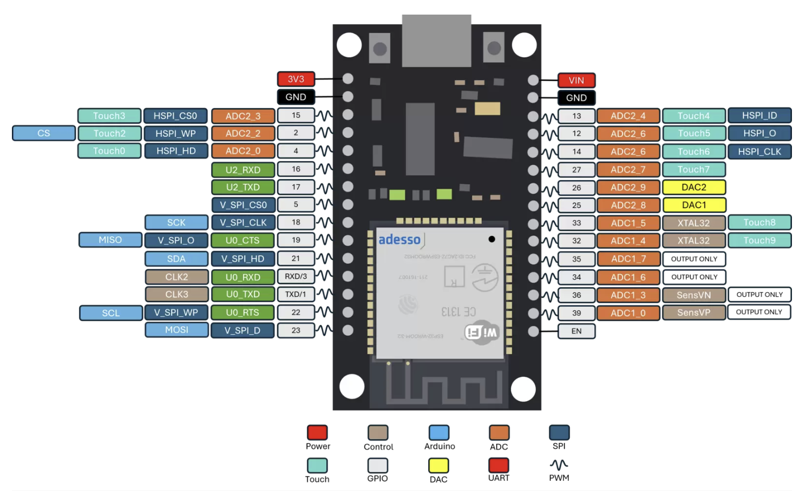
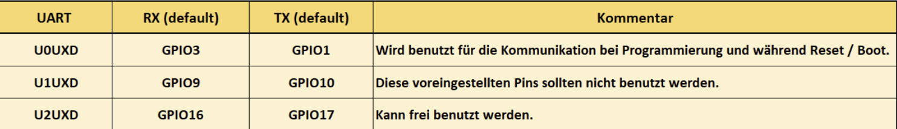
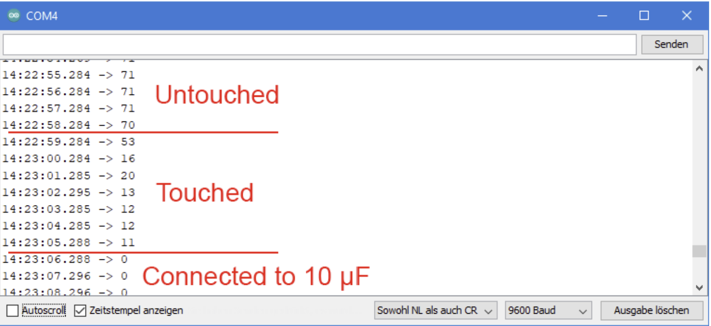
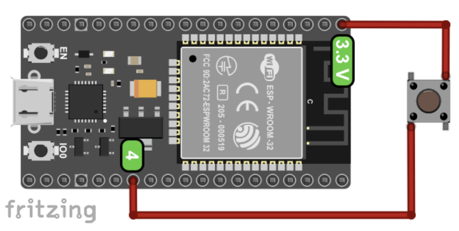
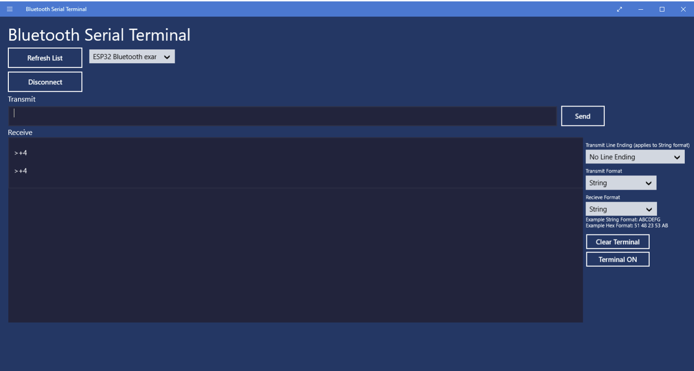

In diesem Kapitel lernst du das konkrete Entwicklungsboard kennen, das als Mess- und Netzwerkzentrale des Hühnerstalls arbeitet.
Für die folgenden Erklärungen verwenden wir das Espressif ESP32-DevKitC V4 mit einem ESP32-WROOM-32E-Modul. Viele preisgünstige Boards sehen ähnlich aus, sind aber nicht zwingend gleich beschriftet. Vor dem Verdrahten vergleichst du deshalb immer die Aufschrift und das Pinout deines konkreten Boards.

Pinout-Bild lokal unter bilder/esp_anschluesse.png. Vergleiche es immer mit der Beschriftung deines konkreten Boards.
Das abgeschirmte Modul enthält den ESP32-Chip, Funktechnik, Flash-Speicher und die Antenne. Hier laufen Programm und Netzwerkkommunikation.
Sie übersetzt USB-Signale des Computers in serielle Signale für den ESP32. Darüber werden Programme übertragen und Diagnosedaten ausgegeben.
Sie versorgt das Board und verbindet es mit dem Rechner. Über USB kann ein Programm geflasht werden.
EN setzt den Chip zurück. BOOT wird für den Download-Modus verwendet, wenn ein Upload nicht automatisch startet.
Der ESP32 ist nicht nur „ein Sensor“. Er ist ein programmierbarer Mikrocontroller mit digitalen Ein-/Ausgängen, analogen Eingängen, WLAN und Bluetooth.
Beim DevKitC gibt es drei Möglichkeiten: Micro-USB, der 5-V-Pin mit GND oder der 3V3-Pin mit GND. Verwende immer nur einen Versorgungsweg gleichzeitig. Das Board arbeitet mit 3,3-V-Logik; 5 V dürfen nicht direkt an einen GPIO gelangen.
| Anschluss | Funktion | Wichtig |
|---|---|---|
| Micro-USB | Versorgung und Datenverbindung zum Computer | Normaler Weg für Upload und Serial Monitor. |
| 5V | 5-V-Versorgung am Header | Nur mit geeigneter, stabiler Versorgung verwenden. |
| 3V3 | 3,3-V-Versorgung bzw. Ausgang des Boards | Nicht mit einer zweiten Versorgung gegeneinander betreiben. |
| GND | gemeinsames Bezugspotenzial | Sensor und ESP32 brauchen eine gemeinsame Masse. |
| Bezeichnung | GPIO-/Chipfunktion | Verwendung |
|---|---|---|
| EN | CHIP_PU / Reset | Setzt den ESP32 zurück; kein normaler Sensor-GPIO. |
| BOOT / IO0 | GPIO0 | Beim Start LOW halten, um den Firmware-Download-Modus zu erzwingen. |
| TX / RX | GPIO1 / GPIO3 | Serielle UART-Schnittstelle; beim Upload und Serial Monitor beteiligt. |
| GND | Masse | Bezugspunkt für Spannungen und Rückleitung im Stromkreis. |
Die genaue Pinbezeichnung bezieht sich auf das ESP32-DevKitC V4. Bei einem anderen Boardmodell kann die Position oder Beschriftung abweichen.
GPIO bedeutet General Purpose Input/Output. Ein Pin kann je nach Programm Eingang oder Ausgang sein. Viele GPIOs besitzen zusätzliche Funktionen.
| Funktion | Bedeutung im Projekt | Beispiele |
|---|---|---|
| Digitaler Eingang | Liest HIGH oder LOW | Taster, Schaltsignal |
| Digitaler Ausgang | Gibt HIGH oder LOW aus | LED, Relaissteuerung mit passender Schaltung |
| ADC | Misst eine Spannung und liefert einen Zahlenwert | LDR am GPIO34 |
| PWM | Erzeugt ein schnelles Ein-/Ausschaltsignal mit veränderlichem Tastgrad | Helligkeit einer LED, Motordrehzahl |
| I2C / SPI / UART | Serielle Kommunikationsverfahren | Displays, Module, Computerverbindung |
„Der Pin ist frei herausgeführt“ bedeutet nicht „jede Funktion ist jederzeit unproblematisch“. Prüfe Boardvariante, Bootfunktion, Eingangsrichtung, Spannung und Mehrfachbelegung.
Beim ESP32 entscheidet nicht nur die Pin-Nummer, sondern auch die Sonderfunktion des Pins. Einige Pins sind intern belegt, einige beeinflussen den Bootvorgang, andere liefern beim Start kurze Pegelwechsel. Genau diese Details sind später wichtig, wenn ein Sensor scheinbar richtig angeschlossen ist, der ESP32 aber nicht mehr startet.
| Pin-Gruppe | Problem | Konsequenz im Projekt |
|---|---|---|
| GPIO6 bis GPIO11 | Intern für die SPI-Kommunikation mit dem Flash-Speicher verwendet. | Unverbunden lassen. Für Sensoren, LEDs oder Relais nicht einplanen. |
| GPIO0, GPIO1, GPIO3, GPIO5, GPIO14, GPIO15 | Können beim Booten kurz HIGH sein oder Signale ausgeben. | Nicht für Aktoren verwenden, die beim Start gefährlich oder störend schalten könnten. |
| GPIO0, GPIO2, GPIO5, GPIO12, GPIO15 | Strapping-Pins: Ihr Pegel beim Start beeinflusst den Bootmodus. | Nur verwenden, wenn die externe Schaltung den Bootpegel nicht verfälscht. |
| GPIO34 bis GPIO39 | Reine Eingänge, keine Ausgänge und keine internen Pull-up/Pull-down-Widerstände. | Gut für Messsignale, ungeeignet für LEDs, Relais oder Ausgangssignale. |
| ADC2-Pins | ADC2 kollidiert beim klassischen ESP32 mit aktivem Wi-Fi. | Für WLAN-Projekte bevorzugt ADC1-Pins nutzen, z. B. GPIO32 bis GPIO39. |
Als digitaler Ausgang setzt du einen GPIO mit pinMode(pin, OUTPUT) und schaltest ihn mit digitalWrite(pin, HIGH) oder digitalWrite(pin, LOW). Als Eingang liest du mit digitalRead(pin). Anders als beim Arduino UNO arbeitet der ESP32 mit 3,3 V Logikspannung. Ein 5-V-Signal ist für GPIOs nicht direkt geeignet. Plane außerdem nur kleine GPIO-Ströme ein; für Relais, Motoren oder stärkere LEDs brauchst du eine Treiberstufe.
Bei Eingängen ist wichtig: INPUT allein kann einen undefinierten Pegel liefern, wenn nichts angeschlossen ist. Mit INPUT_PULLUP oder INPUT_PULLDOWN nutzt du interne Widerstände. An GPIO34 bis GPIO39 stehen diese internen Widerstände nicht zur Verfügung.
Der klassische ESP32 besitzt zwei 12-Bit-ADCs. Ein 12-Bit-Wert reicht theoretisch von 0 bis 4095. Für eine grobe Umrechnung bei 3,3 V kannst du rechnen:
U [V] ≈ 3,3 · analogRead(pin) / 4095
In der Praxis sind ESP32-ADC-Werte verrauscht und nicht perfekt linear. Für den LDR im Hühnerstall ist das meistens beherrschbar, weil du keine Laborpräzision brauchst. Trotzdem solltest du mehrere Messwerte mitteln und bei stark schwankenden Signalen einen kleinen Kondensator am Eingang prüfen.
analogWrite(pin, value) erzeugt beim ESP32 ein PWM-Signal: Der Pin schaltet sehr schnell zwischen LOW und HIGH, und der Tastgrad bestimmt die mittlere Leistung. Das ist für LED-Helligkeit oder Motorleistung geeignet, aber kein echter analoger Spannungsverlauf. Einen echten DAC-Ausgang haben beim klassischen ESP32 nur GPIO25 und GPIO26; dort kann dacWrite(pin, value) einen Spannungswert zwischen ungefähr 0 V und 3,3 V ausgeben.
Du kannst begründen, warum ein Pin trotz sichtbarer Stiftleiste ungeeignet sein kann: Flash-Belegung, Boot-Strapping, Startpegel, ADC2-Wi-Fi-Konflikt und fehlende Pull-Widerstände sind technische Ausschlusskriterien.
Für den Hühnerstall verwenden wir zunächst eine einfache und nachvollziehbare Auswahl. Die konkrete Verdrahtung wird vor dem Aufbau mit dem tatsächlichen Board verglichen.
| Aufgabe | Vorgeschlagener Pin | Warum? |
|---|---|---|
| LDR / KY-018 | GPIO34 | ADC1, Eingang-only passt zur Messaufgabe. |
| KY-015 Datenleitung | z. B. GPIO4 | Digitaler GPIO; die konkrete Modulspannung muss vorher geprüft werden. |
| Serieller Monitor | USB, TX/RX intern | Diagnose und Upload über USB-UART. |
| Versorgung | 3V3/GND oder geprüfte USB-Versorgung | Gemeinsames Bezugspotenzial; keine parallelen Versorgungen. |
Prüfe die genaue KY-015-Variante. Ein 5-V-Datensignal darf nicht direkt an einen 3,3-V-GPIO des ESP32 gelangen. Erst Datenblatt, Versorgung und Pegel klären, dann anschließen.
Du kannst das ESP32-DevKitC als Entwicklungsboard einordnen, seine Versorgungs-, Steuer- und Kommunikationsanschlüsse erklären, wichtige GPIO-Gruppen unterscheiden und eine Pinwahl fachlich begründen.
Die Arduino IDE kann klassische Arduino-Boards direkt programmieren. Für den ESP32 musst du zuerst das Boardpaket von Espressif nachinstallieren. Dieses Paket bringt die Boarddefinitionen, Compiler-Werkzeuge und Upload-Einstellungen mit.
In älteren Anleitungen steht oft https://dl.espressif.com/dl/package_esp32_index.json. Die aktuelle stabile URL in der offiziellen Espressif-Dokumentation lautet https://espressif.github.io/arduino-esp32/package_esp32_index.json.
| Schritt | Was du machst | Warum? |
|---|---|---|
| 1 | Arduino IDE installieren oder aktualisieren. | Der Boardverwalter und die ESP32-Werkzeuge brauchen eine aktuelle IDE. |
| 2 | Datei → Voreinstellungen öffnen. | Dort werden zusätzliche Boardverwalter-Quellen eingetragen. |
| 3 | Bei „Zusätzliche Boardverwalter URLs“ die Espressif-URL als eigene Zeile eintragen. | Die IDE weiß dadurch, wo sie das ESP32-Paket findet. |
| 4 | Werkzeuge → Board → Boardverwalter öffnen, nach esp32 suchen und „esp32 by Espressif Systems“ installieren. | Damit werden ESP32-Boards in der IDE auswählbar. |
| 5 | Nach der Installation ggf. die Arduino IDE neu starten. | So werden neue Boarddefinitionen zuverlässig geladen. |
Für viele einfache Entwicklungsboards passt zunächst ESP32 Dev Module. Wenn dein Board exakt als ESP32 DevKitC oder ähnlich auftaucht, wählst du die passendere Boarddefinition. Danach wählst du unter Werkzeuge → Port den seriellen Anschluss deines ESP32 aus. Wenn kein Port erscheint, prüfst du USB-Kabel, Treiber und ob das Board Strom bekommt.
Du steuerst den ESP32, indem du ein Programm schreibst, es kompilierst und per USB in den Flash-Speicher des Boards hochlädst. Danach läuft das Programm eigenständig auf dem Mikrocontroller. Die Arduino IDE übernimmt dabei drei Aufgaben: Code prüfen, Maschinencode erzeugen und den Upload starten.
void setup() {
Serial.begin(115200);
pinMode(2, OUTPUT);
}
void loop() {
digitalWrite(2, HIGH);
delay(500);
digitalWrite(2, LOW);
delay(500);
}setup() läuft einmal nach Reset oder Einschalten. Dort stellst du Schnittstellen und Pin-Modi ein. loop() läuft danach immer wieder. Dort steht die eigentliche Steuerlogik: messen, entscheiden, schalten, senden.
| Werkzeug | Funktion | Typischer Fehler |
|---|---|---|
| Haken „Überprüfen“ | Kompiliert den Sketch, ohne ihn hochzuladen. | Syntaxfehler oder fehlende Bibliothek. |
| Pfeil „Hochladen“ | Kompiliert und überträgt das Programm über USB-UART. | Falscher Port oder falsches Board ausgewählt. |
| Serial Monitor | Zeigt Textausgaben wie Messwerte oder Fehlermeldungen. | Baudrate passt nicht zu Serial.begin(...). |
| BOOT-Taste | Hilft, den Download-Modus zu erzwingen, falls Auto-Reset nicht klappt. | Zu spät gedrückt oder falscher Moment beim Upload. |
| EN-Taste | Startet den ESP32 neu. | Wird mit BOOT verwechselt; EN allein startet keinen Upload-Modus. |
Sensorwert am GPIO messen → im Programm auswerten → Entscheidung treffen → Ausgabe schalten oder Daten per WLAN senden. Genau diese Kette brauchst du später für Lichtmessung, Stallstatus und Webanzeige.
Du kannst die Arduino IDE für ESP32-Boards vorbereiten, ein passendes Boardpaket installieren, Board und Port auswählen, einen Sketch hochladen und die Grundstruktur aus setup() und loop() erklären.
GPIOs können mehr als HIGH und LOW. Viele Sensoren, Displays und Funkmodule sprechen über standardisierte Schnittstellen. Für den Hühnerstall brauchst du vor allem das Prinzip: Jede Schnittstelle hat typische Leitungen, typische Pins und typische Fehlerquellen.
UART ist eine serielle Punkt-zu-Punkt-Verbindung mit RX und TX. Beim klassischen ESP32 gibt es drei UARTs. Serial nutzt meist UART0 für Upload und Serial Monitor. Zusätzliche UARTs kannst du mit Serial1 oder Serial2 auf passende Pins legen.

Bild lokal: bilder/serielle_schnittstellen.png
#define RX1 16
#define TX1 17
void setup() {
Serial.begin(115200);
Serial1.begin(115200, SERIAL_8N1, RX1, TX1);
}
void loop() {
}SERIAL_8N1 bedeutet: 8 Datenbits, keine Parität, 1 Stoppbit. Das ist die Standardkonfiguration vieler serieller Geräte.
I2C nutzt zwei Leitungen: SDA für Daten und SCL für den Takt. Beim generischen ESP32 liegen die Standardpins häufig auf GPIO21 (SDA) und GPIO22 (SCL). I2C-Leitungen brauchen Pull-up-Widerstände zur passenden Betriebsspannung. Bei 5-V-Modulen brauchst du Pegelanpassung, weil der ESP32 mit 3,3 V arbeitet.
SPI ist schneller als I2C und nutzt typischerweise SCLK, MISO, MOSI und CS. Beim klassischen ESP32 sind zwei SPI-Busse für Projekte nutzbar: VSPI und HSPI. VSPI verwendet häufig GPIO18 als SCLK, GPIO19 als MISO, GPIO23 als MOSI und GPIO5 als CS. GPIO5 ist aber auch ein Strapping-Pin; für den Chip-Select kannst du daher bewusst einen anderen freien GPIO wählen.
Du kannst UART, I2C und SPI nach Leitungen, typischer Verwendung und ESP32-Fallstricken unterscheiden.
Nicht jede ESP32-Funktion brauchst du sofort. Einige sind aber gute Beispiele dafür, warum der ESP32 für technische Projekte stärker ist als ein einfacher Mikrocontroller ohne Funk und Sleep-Modi.
Touch-Pins reagieren auf Kapazitätsänderungen. Wenn du einen Touch-Pin oder ein angeschlossenes Kabel berührst, ändert sich der Messwert. Der Messwert wird mit touchRead(pin) gelesen. Je nach Aufbau kann der Wert beim Berühren kleiner werden.

Bild lokal: bilder/touch_pin.png
Ein Interrupt unterbricht das normale Programm, wenn ein Ereignis auftritt. Das ist sinnvoll, wenn ein Signal nicht verpasst werden darf, zum Beispiel ein Taster, ein Reedkontakt oder ein Sicherheitskontakt an einer Klappe. Beim ESP32 kannst du externe GPIO-Interrupts auch an den reinen Eingangspins GPIO34 bis GPIO39 nutzen.

Bild lokal: bilder/interrupt.png
volatile bool event = false;
void IRAM_ATTR eventISR() {
event = true;
}
void setup() {
pinMode(4, INPUT_PULLDOWN);
attachInterrupt(4, eventISR, RISING);
}Wi-Fi und Bluetooth verbrauchen vergleichsweise viel Energie. Für batteriebetriebene Messstationen kannst du Funkmodule zeitweise abschalten oder Sleep-Modi verwenden. Beim Light Sleep läuft das Programm nach dem Aufwachen weiter. Beim Deep Sleep startet der ESP32 nach dem Aufwachen neu. Wecken kann ihn zum Beispiel ein Timer, ein externes Signal an einem RTC_IO-Pin oder ein Touch-Ereignis.
Bluetooth kann für einfache Steuerbefehle genutzt werden, etwa um vom Smartphone aus Testsignale an den ESP32 zu senden. Für den Hühnerstall ist WLAN für die spätere Webanzeige wichtiger, Bluetooth ist aber ein gutes Beispiel für serielle Befehlssteuerung ohne Kabel.

Bild lokal: bilder/bluetooth_terminal.png
Für ein echtes Projekt zählt nicht nur der Chip. Du prüfst die Stromversorgung, USB-Anschluss, verfügbare Schnittstellen, Pin-Anordnung, Antenne, Formfaktor, Zusatzfunktionen und Kosten. Eine PCB-Antenne ist kompakt, eine externe Antenne über IPX kann bei schwieriger Einbaulage mehr Reichweite ermöglichen. Boards mit Akku-Ladeelektronik, OLED, Ethernet oder größerem Flash können sinnvoll sein, wenn diese Zusatzfunktionen wirklich gebraucht werden.
Du kannst Spezialfunktionen des ESP32 einordnen und bei der Board-Auswahl technische Kriterien statt nur den Produktnamen verwenden.